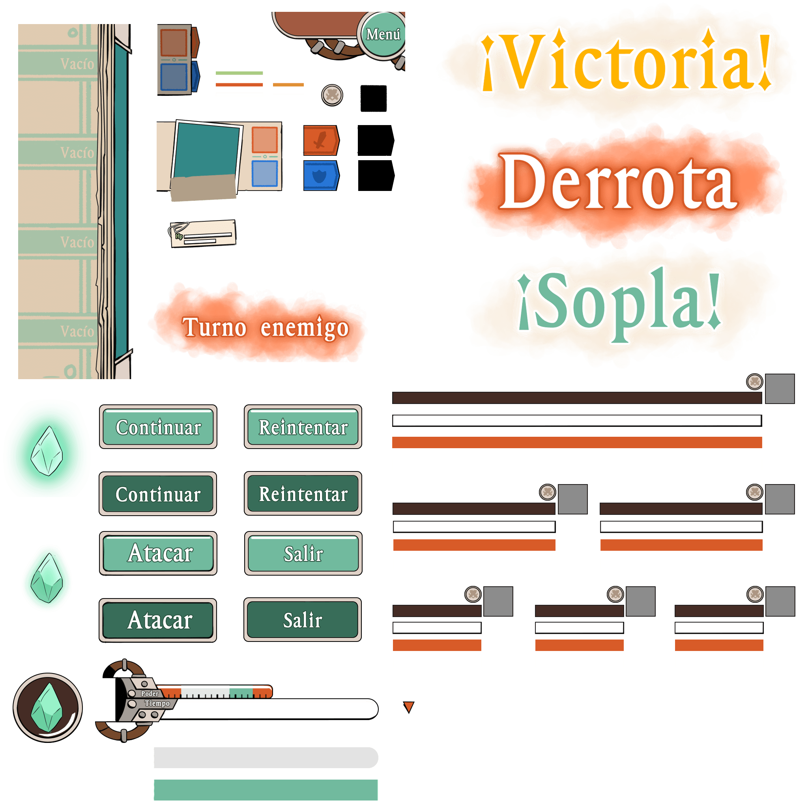
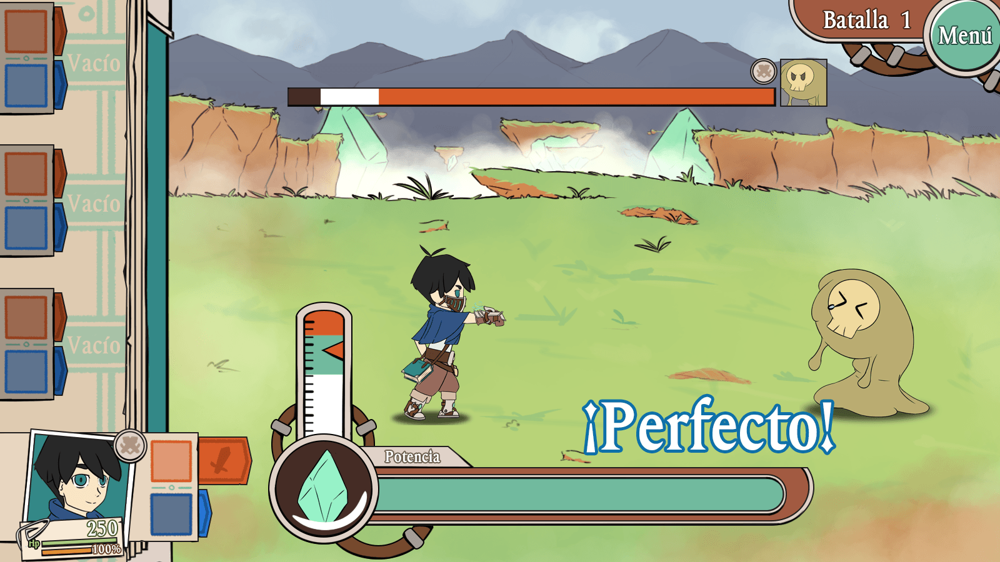
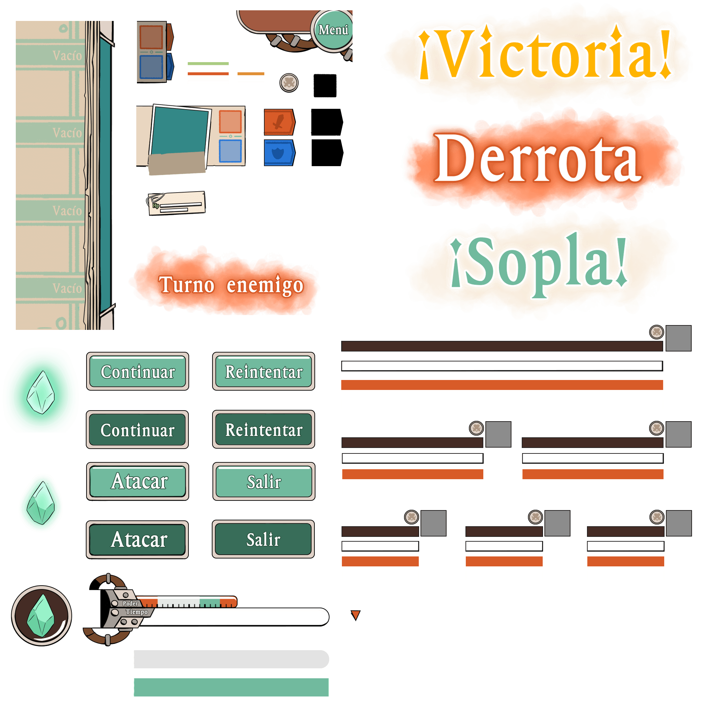
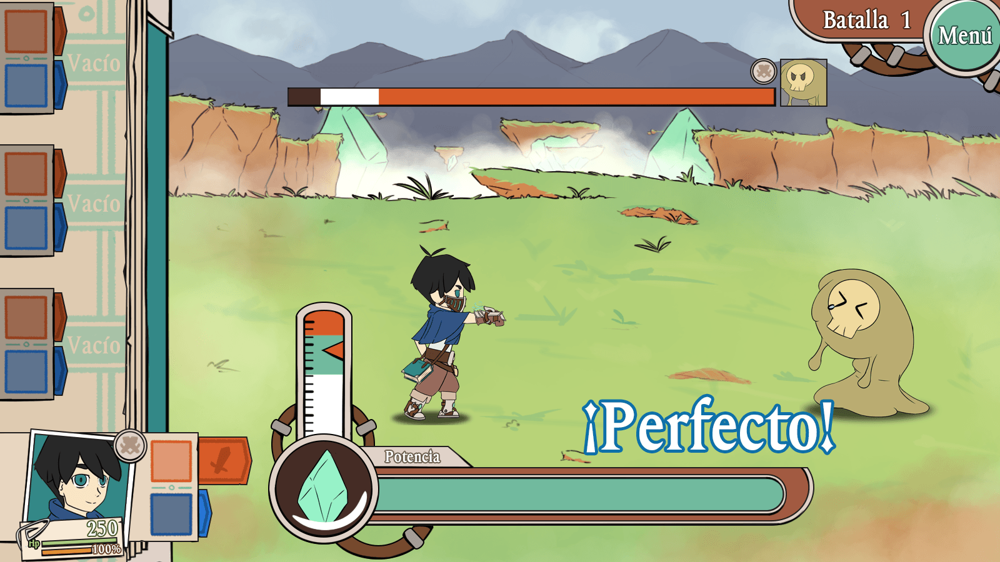

Alvea: Legend of the Windmasters
Alvea
| Client | Graduation Project |
|---|---|
| Role | UX/UI Design Game Design Concept Art |
| Year | 2018-2019 |
Context
Carlos Van Buren Hospital is the main public hospital of the Valparaíso Region in Chile. Being a public hospital, it receives and treats a major percentage of the region’s population.
As part of my career graduation project, I was tasked to work with them in new methods to improve adherence and treatment management in patients with chronic illnesses through the use of videogame design techniques, with the main goal being improving their average survival rates.
Context
Carlos Van Buren Hospital is the main public hospital of the Valparaíso Region in Chile. Being a public hospital, it receives and treats a major percentage of the region’s population.
As part of my career graduation project, I was tasked to work with them in new methods to improve adherence and treatment management in patients with chronic illnesses through the use of videogame design techniques, with the main goal being improving their average survival rates.
My roles
UX Designer:
I worked together with hospital professionals as well as patients, with the goal of understanding the problem and shorten the distance between both groups through interviews, observation in terrain, and other research tools.
Game designer
I was tasked with designing and documenting the development of a gameplay system, with mechanics based on the results obtained from the previous UX research, finding ways to better the users experience through the use of collaborative gameplay
UI Designer
I worked in the information architecture of the software based on documentation, and in the subsequent design of the elements and aesthetics leaning on the interviews and insights of the patients and professionals to deliver a product that fits the necessities of the users.
Concept Artist
With the goal of determining the look and feel and aesthetics of the software, I worked on the creation of different concept art pieces that would allow me to convey the idea that we had for the world.
The Challenges
While Carlos Van Buren Hospital counts with highly capable professionals, the amount of patients the receive each day impedes them from fully focusing on the treatment of each chronic patient, specifically when it comes to their treatment procedures outside the hospital, which is one of the main problems that professionals link to the low levels of survivability in our country. One of the methods used to keep adherence in the younger patients is the use of videogames as a way to motivate them, however those methods aren’t proving to be effective, which begs to question the why and which are the elements that are causing this issue.
The Challenges
While Carlos Van Buren Hospital counts with highly capable professionals, the amount of patients the receive each day impedes them from fully focusing on the treatment of each chronic patient, specifically when it comes to their treatment procedures outside the hospital, which is one of the main problems that professionals link to the low levels of survivability in our country. One of the methods used to keep adherence in the younger patients is the use of videogames as a way to motivate them, however those methods aren’t proving to be effective, which begs to question the why and which are the elements that are causing this issue.
Objectives
1.
Rise the average survival rates and quality of life of chronic patients, taking into account the characteristics of the direct user as well as their care circle.
2.
Integrate gameplay elements into the system that allow to recontextualize the tasks that compose the treatment and give them tangibility and a context that the user can value.
3.
Deliver a tool that allows caretakers as well as the medical team facilitate the handling of extrahospitalary aspects of the therapy and treatment of the illness.
El Proceso
Objectives
1.
Rise the average survival rates and quality of life of chronic patients, taking into account the characteristics of the direct user as well as their care circle.
2.
Integrate gameplay elements into the system that allow to recontextualize the tasks that compose the treatment and give them tangibility and a context that the user can value.
3.
Deliver a tool that allows caretakers as well as the medical team facilitate the handling of extrahospitalary aspects of the therapy and treatment of the illness.
Process
Investigation
Having to integrate into a field that I was new to, the first step I had to take was to investigate, focusing on the illness the project was focused on and the existing treatment methods, to identify the most important factors that affect the handling of the treatment, and be able to propose a solution that’s sensible and aligns with the necessities of all parties involved. With that, the main objectives of this process were:
1 Identify the most relevant factors that boost survival in a chronic patient in the context of management of treatment of the illness, establishing their impact or effect in their adherence to the treatment.
2 Investigate the barriers and other aspects that affect adherence in chronic illness management in pediatric patients. .
3 Understand in which way game and play activities can promote adherence to chronic illness treatment.
In order to accomplish this objectives, I had the chance to work together with professionals from the field, besides a deep study of the bibliography around chronic treatment management and its effects on chronic patients psyche, which allowed me to establish key metrics on which to establish the project objectives.
Once i had enough knowledge about the particular illness, the treatment process and its effect on the patients from the professional point of view, my focus shifted to working with the patients, mainly children, about how they perceive their illness and the obstacles that the treatment poses on their day to day. For this purpose the hospital let me study and interact with their patients, with authorization from their parents beforehand. Due to petition from the stakeholders of the project, I’ve been asked to omit some of the details regarding the illness and other details, so I’ll be focusing mainly on the process behind the project.
Investigation
In order to accomplish this objectives, I had the chance to work together with professionals from the field, besides a deep study of the bibliography around chronic treatment management and its effects on chronic patients psyche, which allowed me to establish key metrics on which to establish the project objectives:
1 uno de los primeros pasos que tuve que tomar para la realización del proyecto fue el de realizar un proceso de investigación,
2 uno de los primeros pasos que tuve que tomar para la realización del proyecto fue el de realizar un proceso de investigación,
3 uno de los primeros pasos que tuve que tomar para la realización del proyecto fue el de realizar un proceso de investigación,
Para estos objetivos, tuve la chance de trabajar en conjunto con profesionales del area, además de un estudio profundo de la bibliografía en torno al manejo de tratamientos y el efecto sobre la psiquis de los pacientes crónicos, lo cual me permitió establecer métricas clave sobre las cuales establecer los objetivos de mi proyecto.
Una vez que tuve un manejo suficiente de la enfermedad en cuestión y de los tratamientos y su efecto en los pacientes desde el punto de vista profesional, mi foco cambio hacia el trabajo con los pacientes, principalmente niños, sobre como ellos perciben la enfermedad y los obstáculos que representa el tratamiento en su dia a dia. Para esto el hospital me abrió las puertas para interactuar y relacionarme con aquellos pacientes que se mostraran interesados en el proyecto, con la autorización de sus padres. Cabe destacar sin embargo, que a pedido de stakeholders relacionados con el proyecto, se han omitido algunos datos con respecto a la enfermedad a tratar u otros detalles.
Los resultados de estas entrevistas y trabajo en terreno con los niños se tradujeron en datos sobre sus habitos de tratamiento y preferencias de juego, los cuales luego fueron contrapuestos con los datos obtenidos durante la investigación anterior.
Con los resultados obtenidos mediante mi investigacion y las entrevistas realizadas tanto a los usuarios como a otros stakeholders, realice un benchamark de mi proyecto contra otros proyectos ya existentes dentro del mercado en el mismo campo, a modo de comprobar mi hipótesis de investigación, ademas de evaluar como la competencia respondía a las necesidades de los usuarios.
Al haber finalizado con el benchmark obtuve la última pieza de información necesaria para poder comprobar mi hipótesis: los juegos de salud existentes en el mercado (para la enfermedad crónica tratada en cuestión) no cuentan con los elementos de diseño de juegos necesarios para que puedan cumplir con su objetivo de motivar a los pacientes al mediano a largo plazo. El elemento de juego es usado solo de forma superficial, y los pacientes son capaces de darse cuenta de esto y no reconocer los productos como juegos, generando el efecto contrario al sentirse "engañados"
Con esto, el siguiente paso era desarrollar el producto principalmente desde el punto de vista del diseño de juegos.
Game Design
Los resultados obtenidos de mis entrevistas y la investigación me permitieron desarrollar un sistema que pudiera solucionar los problemas de manejo del tratamiento de los pacientes de una forma que fuera atractiva para el usuario principal, en este caso niños en edad pediátrica.
El proceso de desarrollo de este sistema se realizo en etapas: en primer lugar se realizaron varias revisiones de concepto, a modo de documentos de una pagina, los cuales luego se compararon con las respuestas a las entrevistas y al estudio a los usuarios para determinar cual se adaptaba mejor a sus intereses, seguido de un documento inicial, en el cual se definieron de forma general las mecánicas principales y características diferenciadoras del producto, lo cual finalmente se tradujo en un Game Design Document, en el cual todas las mecánicas mencionadas anteriormente se pulieron y desarrollaron con el fin de ser entregadas a un equipo de trabajo, en este caso compuesto por mi y otro programador, capaz de llevar el documento a un producto final
Con la investigacion y la documentación del sistema lista, lo único que restaba por hacer era desarrollar la interfaz y los elementos gráficos que servirían para transmitir el look and feel del software. En ambos casos se trabajó en conjunto con los usuarios, para comprobar la usabilidad y determinar las preferencias estéticas de los mismos a través de entrevistas y pruebas de usuario.
Diseño de interfaz
En el caso del diseño de la interfaz, mi falta de experiencia y conocimiento principalmente autodidacta hasta ese momento me llevo a realizar una mezcla entre un mapa de navegación y un mapa de flujo, sin mucho cuidado por la jerarquización del contenido ni el orden del mismo. Sin embargo, esto no provocó mayores percances en el proceso de desarrollo, principalmente debido al contexto del desarrollo, y al hecho de que la persona encargada de interpretar estos datos para el diseño de la interfaz era, bueno, yo.
Dejando ese factor de lado, la aplicación de la herramienta si me sirvió para determinar la cantidad de paginas que debia contener el producto y como se distribuirían dentro de la plataforma, asi como los flujos de navegación dentro de la misma.
Como ejercicio adicional, realicé un análisis de contenido de distintos juegos mobiles, con el fin de encontrar patrones de organizacion del contenido dentro de las pantallas. Esto me permitió sortear y aliviar los problemas existentes en la aplicación de mi herramienta anterior, al poder descubrir que efectivamente existía un patrón de organizacion, utilizando el botón mas pequeño como modulo base para determinar proporciones

Los datos obtenidos con estas dos herramientas me permitieron iniciar el proceso de wireframing, comenzando con modelos en papel, basandome en los bosquejos usados en los documentos de diseño, y adaptandolos a los contenidos y grillas que obtuve al aplicar las herramientas anteriores.


Estos wireframes en papel luego se refinaron y se les añadió un tema, obtenido segun las prefencias esteticas de los pacientes obtenidas a traves del proceso de investigación, hasta llegar a un producto finalizado
Este mismo proceso se utilizó para las pantallas de gameplay, en este caso ademas se diseñó un UI kit
 



Este mismo proceso se utilizó para las pantallas de gameplay, en este caso ademas se diseñó un UI kit
Arte Conceptual
En pararlelo al proceso de diseño de interfaz, se realizó el proceso de creación de elementos de arte para el juego, comenzando por thumbnails que me permitieran caracterizar el mundo en el que se iba a ubicar el juego y sus personajes. Los conceptos y criterios para el diseño del arte se relacionan principalmente con las preferencias esteticas del usuario objetivo y con elementos que permitan relacionarlos con la enfermedad crónica con la que se estaba trabajando.
Por limitaciones de tiempo, sin embargo, solo pude completar una de las piezas, la cual se refino hasta llegar a un producto terminado.
Esto a su vez me permitió caracterizar a los distintos personajes y enemigos que poblarían el mundo del juego

Prototipo
Finalmente todos estos elementos se llevaron a un prototipo de banca móvil, el cual fue desarrollado en Unity3D con la ayuda de un programador haciendose cargo del back-end, mientras que yo me hice cargo de integrar las animaciones tanto de interfaz como de personajes y efectos.

Conclusión
Una de las principales conclusiones que se pudo obtener de este proyecto, es la confirmación de que actualmente los videojuegos destinados al área de salud, carecen del framework y las estructuras de diseño adecuadas para poder ser considerados videojuegos, abordando este elemento de forma superficial sin considerar la importancia que tiene la teoría y el proceso de diseño que existe detrás de la creación de un juego.
Al mismo tiempo esto señala la importancia de la investigación de usuario para poder determinar no solo estas carencias, si no que para poder moldear y estructurar una experiencia de juego adecuada al usuario y a sus necesidades.
Los resultados de estas entrevistas y trabajo en terreno con los niños se tradujeron en datos sobre sus habitos de tratamiento y preferencias de juego, los cuales luego fueron contrapuestos con los datos obtenidos durante la investigación anterior.
Con los resultados obtenidos mediante mi investigacion y las entrevistas realizadas tanto a los usuarios como a otros stakeholders, realice un benchamark de mi proyecto contra otros proyectos ya existentes dentro del mercado en el mismo campo, a modo de comprobar mi hipótesis de investigación, ademas de evaluar como la competencia respondía a las necesidades de los usuarios.
Al haber finalizado con el benchmark obtuve la última pieza de información necesaria para poder comprobar mi hipótesis: los juegos de salud existentes en el mercado (para la enfermedad crónica tratada en cuestión) no cuentan con los elementos de diseño de juegos necesarios para que puedan cumplir con su objetivo de motivar a los pacientes al mediano a largo plazo. El elemento de juego es usado solo de forma superficial, y los pacientes son capaces de darse cuenta de esto y no reconocer los productos como juegos, generando el efecto contrario al sentirse "engañados"
Con esto, el siguiente paso era desarrollar el producto principalmente desde el punto de vista del diseño de juegos.
Game Design
Los resultados obtenidos de mis entrevistas y la investigación me permitieron desarrollar un sistema que pudiera solucionar los problemas de manejo del tratamiento de los pacientes de una forma que fuera atractiva para el usuario principal, en este caso niños en edad pediátrica.
El proceso de desarrollo de este sistema se realizo en etapas: en primer lugar se realizaron varias revisiones de concepto, a modo de documentos de una pagina, los cuales luego se compararon con las respuestas a las entrevistas y al estudio a los usuarios para determinar cual se adaptaba mejor a sus intereses, seguido de un documento inicial, en el cual se definieron de forma general las mecánicas principales y características diferenciadoras del producto, lo cual finalmente se tradujo en un Game Design Document, en el cual todas las mecánicas mencionadas anteriormente se pulieron y desarrollaron con el fin de ser entregadas a un equipo de trabajo, en este caso compuesto por mi y otro programador, capaz de llevar el documento a un producto final
Con la investigacion y la documentación del sistema lista, lo único que restaba por hacer era desarrollar la interfaz y los elementos gráficos que servirían para transmitir el look and feel del software.
En ambos casos se trabajó en conjunto con los usuarios, para comprobar la usabilidad y determinar las preferencias estéticas de los mismos a través de entrevistas y pruebas de usuario.
Diseño de interfaz
En el caso del diseño de la interfaz, mi falta de experiencia y conocimiento principalmente autodidacta hasta ese momento me llevo a realizar una mezcla entre un mapa de navegación y un mapa de flujo, sin mucho cuidado por la jerarquización del contenido ni el orden del mismo. Sin embargo, esto no provocó mayores percances en el proceso de desarrollo, principalmente debido al contexto del desarrollo, y al hecho de que la persona encargada de interpretar estos datos para el diseño de la interfaz era, bueno, yo.
Dejando ese factor de lado, la aplicación de la herramienta si me sirvió para determinar la cantidad de paginas que debia contener el producto y como se distribuirían dentro de la plataforma, asi como los flujos de navegación dentro de la misma.
Como ejercicio adicional, realicé un análisis de contenido de distintos juegos mobiles, con el fin de encontrar patrones de organizacion del contenido dentro de las pantallas. Esto me permitió sortear y aliviar los problemas existentes en la aplicación de mi herramienta anterior, al poder descubrir que efectivamente existía un patrón de organizacion, utilizando el botón mas pequeño como modulo base para determinar proporciones

Los datos obtenidos con estas dos herramientas me permitieron iniciar el proceso de wireframing, comenzando con modelos en papel, basandome en los bosquejos usados en los documentos de diseño, y adaptandolos a los contenidos y grillas que obtuve al aplicar las herramientas anteriores.
Estos wireframes en papel luego se refinaron y se les añadió un tema, obtenido segun las prefencias esteticas de los pacientes obtenidas a traves del proceso de investigación, hasta llegar a un producto finalizado
Este mismo proceso se utilizó para las pantallas de gameplay, en este caso ademas se diseñó un UI kit
Arte conceptual
En pararlelo al proceso de diseño de interfaz, se realizó el proceso de creación de elementos de arte para el juego, comenzando por thumbnails que me permitieran caracterizar el mundo en el que se iba a ubicar el juego y sus personajes. Los conceptos y criterios para el diseño del arte se relacionan principalmente con las preferencias esteticas del usuario objetivo y con elementos que permitan relacionarlos con la enfermedad crónica con la que se estaba trabajando.
Por limitaciones de tiempo, sin embargo, solo pude completar una de las piezas, la cual se refino hasta llegar a un producto terminado
Esto a su vez me permitió caracterizar a los distintos personajes y enemigos que poblarían el mundo del juego
Prototipo
Finalmente todos estos elementos se llevaron a un prototipo de banca móvil, el cual fue desarrollado en Unity3D con la ayuda de un programador haciendose cargo del back-end, mientras que yo me hice cargo de integrar las animaciones tanto de interfaz como de personajes y efectos.
Conclusión
Una de las principales conclusiones que se pudo obtener de este proyecto, es la confirmación de que actualmente los videojuegos destinados al área de salud, carecen del framework y las estructuras de diseño adecuadas para poder ser considerados videojuegos, abordando este elemento de forma superficial sin considerar la importancia que tiene la teoría y el proceso de diseño que existe detrás de la creación de un juego.
Al mismo tiempo esto señala la importancia de la investigación de usuario para poder determinar no solo estas carencias, si no que para poder moldear y estructurar una experiencia de juego adecuada al usuario y a sus necesidades.